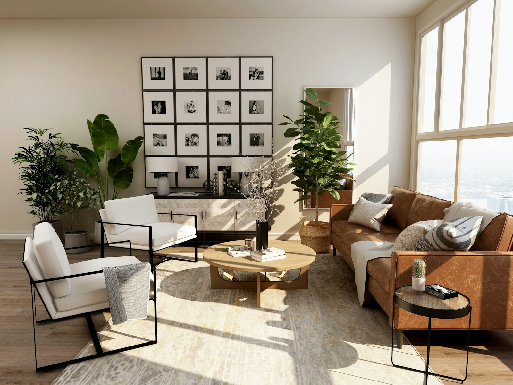

Nos Services & Expertises
Des solutions d'ingénierie et de construction haut de gamme, fondées sur la précision technique, le respect des normes et la recherche constante de l'excellence.
Un interlocuteur unique pour l'ensemble de la chaîne BTP
De la conception à la réception, nos équipes coordonnent gros œuvre, infrastructures, promotion immobilière et études techniques. Chaque expertise dispose de ses propres moyens — engins, bureau d'études, flotte logistique — pour garantir autonomie et maîtrise des délais.
Construction de bâtiments de prestige
De la villa d'architecte minimaliste aux complexes immobiliers résidentiels et commerciaux d'envergure, AUGIC réalise des projets qui repoussent les limites de la construction moderne.
Nous prenons en charge la phase de gros œuvre ainsi que le second œuvre avec une attention méticuleuse portée aux finitions. Nos conceptions intègrent des solutions de domotique avancée, d'efficacité énergétique et des matériaux nobles pour garantir durabilité et esthétique.
- check_circle Immeubles de bureaux intelligents (Smart Buildings)
- check_circle Villas résidentielles contemporaines clés en main
- check_circle Rénovations lourdes et extensions structurelles
 Gros œuvre
Gros œuvre
 Structures complexes
Structures complexes
Génie civil & Ouvrages d'art
Le bureau d'études structures de AUGIC élabore des conceptions techniques de haute précision, rigoureusement conformes aux Eurocodes et aux normes de construction internationales.
Nous encadrons la réalisation de structures complexes nécessitant une technicité hors pair : fondations spéciales (pieux, micro-pieux), radiers monumentaux, soutènements de grande hauteur, pylônes et réservoirs industriels en béton armé ou en charpente métallique.
- check_circle Études de béton armé et calculs de structures complexes (BIM)
- check_circle Fondations profondes et ouvrages de soutènement
- check_circle Ponts, passerelles et structures industrielles lourdes
Infrastructures routières & voiries
La connectivité et le désenclavement exigent des infrastructures routières de premier ordre. AUGIC dispose du matériel lourd et de l'expertise géotechnique pour mener à bien des chantiers routiers majeurs.
De l'étude de sol préliminaire aux terrassements généraux, nous réalisons la pose d'enrobés bitumineux de haute résistance, le pavage de voiries urbaines, ainsi que les réseaux divers d'assainissement (VRD) indispensables à la longévité des voies.
- check_circle Routes nationales, pistes de désenclavement et voies express
- check_circle Voiries et Réseaux Divers (VRD) et évacuation des eaux pluviales
- check_circle Aménagements urbains, pavages et trottoirs
 Travaux publics
Travaux publics

Résidence de prestigePromotion & Vente immobilière de prestige
En tant que promoteur immobilier de référence, AUGIC conçoit et commercialise des programmes résidentiels d'exception dans les quartiers les plus recherchés.
Nos villas et appartements allient architecture avant-gardiste, confort haut de gamme et conformité légale absolue (titres fonciers sécurisés). Nous proposons un accompagnement sur mesure, du plan à la remise des clés.
- check_circle Villas d'architectes haut de gamme et manoirs
- check_circle Penthouses de luxe avec panoramas d'exception
- check_circle Parcelles viabilisées dans des copropriétés sécurisées
Études techniques & Modélisation
La réussite d'un ouvrage haut de gamme commence par des études de conception rigoureuses. Notre équipe d'ingénieurs et de dessinateurs réalise des études techniques approfondies et des modélisations en 3D.
Grâce à la méthodologie BIM (Building Information Modeling), nous créons des jumeaux numériques des ouvrages pour optimiser l'agencement des réseaux, simuler le comportement structurel et planifier avec exactitude le déroulement du chantier.
- check_circle Modélisation BIM 3D et détection de conflits
- check_circle Calculs réglementaires de structure, fluides et thermique
- check_circle Audits de conformité technique et expertises géotechniques
 BIM & études
BIM & études
Comment nous menons vos projets
Chaque mission suit un processus structuré, de l'étude de faisabilité à la réception des ouvrages. Nos ingénieurs et chefs de chantier assurent un suivi rigoureux à chaque étape.
-
Étude & faisabilité
Analyse géotechnique, dimensionnement, planning et chiffrage détaillé avant engagement.
-
Conception & ingénierie
Plans d'exécution, modélisation BIM et validation technique par nos ingénieurs.
-
Exécution terrain
Mobilisation des engins, contrôle des matériaux et respect des normes HSE.
-
Réception & garantie
Procès-verbal, dossier des ouvrages exécutés et accompagnement post-livraison.
Standards de qualité sur tous nos chantiers
Sécurité & HSE
Protocoles de sécurité, EPI obligatoires, briefings quotidiens et zéro tolérance sur les risques majeurs.
Qualité & conformité
Contrôle des matériaux, essais de compactage, vérification du ferraillage et traçabilité des coulages.
Respect des délais
Planning détaillé, reporting hebdomadaire et mobilisation de notre flotte logistique propre.
Nos chantiers en images et vidéos
Terrassement, bétonnage, logistique lourde — retrouvez l'ensemble de nos visuels dans la médiathèque.


Tout ce que vous devez savoir
Prêt à construire ou investir avec l'élite ?
Discutez dès maintenant avec l'un de nos ingénieurs conseils pour obtenir un chiffrage prévisionnel précis ou planifier une visite de nos villas disponibles.